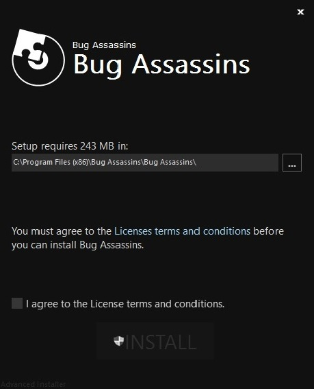

Click on the Download tab to download the setup file

Step 1:
Choose the destination for the software to be installed.
Please go though the terms and conditions carefully and click on the install button.
Step 2:
The setup installation might take a few minutes.
Please wait till the setup wizard installs the software.
Step 3:
A prompt indicating the successful installation of the software.
Step 4:
To run the software, please click on the icon where the software is installed
Step 5:
Please choose a CSV file to proceed with using the software.
Step 6:
Select the path for the required csv file by clicking on the browse drop down menu.
Step 7:
Once the csv file is selected please click on the import button for further processing.
Step 8:
After choosing the csv file, please click on the exclude button to exclude the unnecessary features.
Step 9:
Select the output vector.
Step 10:
Confirm the number of columns selected by clicking on the Yes button.
Step 11:
Choose the query csv file by specifying the required path.
Step 12:
Click on the import button to import the query csv file into your software.
Step 13:
Once the above processes are completed the software displays the required output. (i.e the evaluation metrics including success, failure , F1 score , Accuracy , False Positives and False Negatives.)